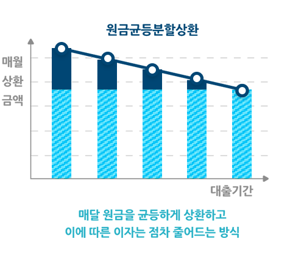
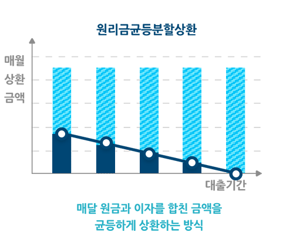

상세 서류는 상담 시 안내하여 드리며, 필요 시 기타 추가 서류 제출을 요청 받으실 수 있습니다.
대출기한전상환수수료 (중도상환수수료)
대출기간 중 대출금의 전부 또는 일부를 상환하는 경우의 대출기한전상환수수료
36개월 초과시 수수료 : 없음
36개월 이하시 수수료 : 상환금액의 2%
대출기한전상환수수료 산식 = 기한전상환대출금액 X 수수료율(0~2%) X
(대출잔여일수/대출약정기간)
기타수수료
대출취급과 관련된 수수료(비용) 중 대출기한전상환수수료를 제외한 고객이 부담하는 수수료 항목
취급수수료 : 없음
인지비용 부담
대출 실행시 아래와 같이 대출한도설정 금액별로 인지세가 과세됩니다(인지세법 제2조)- 대출금액(증액대출 포함)
5천만원 이하 : 비과세- 대출금액(증액대출 포함) 5천만원 초과~1억원 이하 : 7만원 (저축은행과 고객이 각
50%씩 부담)- 대출금액(증액대출 포함) 1억원 초과~10억원 이하 : 15만원 (저축은행과 고객이 각 50%씩
부담)
연체이자율 (지연배상금율)
약정이자율 + 연체가산이자율(연 3%) 단, 적용되는 연체이자율은 법정최고이자율(연 20%)을 초과하지 않습니다.
상환예시
상환방식
원금균등분할상환
원리금균등분할상환
실제 상환금액과는 다소 상이할 수 있습니다.
#00ACEE원금
#004674이자
 
파라솔 직장인 신용대출 상환방식 안내표
원금균등분할상환
원리금균등분할상환
대출금액
1,000만원
대출금액
1,000만원
대출기간
36개월
대출기간
36개월
적용금리
연 19.99%
적용금리
연 19.99%
월상환액 (원금+이자)
282,369원~447,555원
시간경과 따라 낮아짐
월상환액 (원금+이자)
371,584원
매월 동일
총이자상환액
3,086,249원
총이자상환액
3,385,288원
장·단기 연체 정보 등록 안내
대출원금, 이자 등을 3개월 이상 연체한 경우에는 3개월이 되는 날을 등록 사유 발생일로
하여 그 때로부터 7영업일 이내에 '연체 등' 정보 거래처로 한국신용정보원에 등록됩니다.
"신용정보관리규약" 개정으로 '연체 등' 정보등록 기준이 변경 될 수 있습니다.
'연체 등' 정보가 등록되면, 금융거래제약 등 불이익을 받을 수 있습니다.
(예시) 원금 또는 이자를 납입하여야 할 날 : 5월 10일 연체 발생일 :
5월 11일, 등록사유 발생일 : 8월 11일
한도거래대출의 경우에는 한도초과일
다음날부터 3개월 후에 '연체 등' 정보가 등록됩니다.
'연체 등' 정보 거래처로 등록된 후 연체금액을 상환하여 등록 사유가 해제되는 경우에도
등록기간 및 금액에 따라 해제 기록이 1년 동안 남아 있을 수 있어 동 기록으로 인해 금융상의 불편이 초래될 수도
있음에 유의하시기 바랍니다.
또한 "연체기간 5영업일 이상, 연체금액 10만원 이상"의 [단기 연체]가 발생하는 경우도
신용조회회사를 통해 금융회사 간에 해당 연체정보가 공유되어 개인신용평점 하락의 원인이 될 뿐만 아니라 신용카드
사용정지 등 금융거래가 제한되어 예상하지 못한 불편이 발생할 수 있으므로 신중한 관리가 필요합니다.
대출 거절 사유 고지 제도 안내
신용정보의 이용 및 보호에 관한 법률 제20조와 제36조, 같은 법 시행령 제31조, 신용정보업 감독규정 제22조 제8호에 따라
대출신청에 따른 저축은행 심사 결과 불승인시 그 사유를 고지 받으실 수 있습니다.
유의사항
계약 체결 전 상품설명서 및 약관을 확인하시기 바랍니다.
해당 상품에 대해 충분한 사전 설명을 받을 권리가 있으며, 설명을 이해한 후 거래하시기
바랍니다.
상환능력에 비해 과도한 대출은 신용등급 또는 개인신용평점 하락의 원인이 될 수 있습니다.
개인신용평점 하락으로 금융거래가 제약 또는 불이익이 발생할 수 있습니다.
연체 시 계약 기한 만료 전 원리금 변제 의무가 발생할 수 있습니다.
저축은행 심사기준과 고객신용도에 따라 대출여부가 결정되며 대출한도 및 대출금리에 차이가 있을
수 있습니다.
대출계약의 체결 사실만으로도 개인신용평점이 하락할 수 있으며, 대출계약이 변제 혹은 이에
준하는 방식으로 거래가 종료된 경우에도 일정기간 개인신용평점의 산정에 영향을 줄 수 있습니다.
상품 관련 내용은 사전 통보 없이 변경 가능하며, 당행 여신 규정 및 관련 법규에 의거하여
금융기관의 신용 관리대상 거래처로 규제된 경우 또는 당행 심사기준과 고객신용도에 따라 대출이 거절될 수 있습니다.
고객님의 신용정보를 조회한 기록은 신용평가 목적으로 타 금융기관 등에 제공되지 않으며,
무등급자의 신용평가 목적 이외에는 개인신용평점 산정에 반영되고 있지 않습니다. 고객님께서 나이스지키미, 올크레딧
등의 본인신용정보 관리 서비스를 이용하시는 경우 신용정보의 이용 및 보호에 관한 법률에 따라 고객님께서 조회하신
기록을 확인 하실 수 있습니다.
대출금의 상환 또는 이자납입이 지연된 경우 연체이율이 적용되며 예금 등 기타채권과의 상계나
법적절차 등으로 재산상의 불이익을 당하실 수 있습니다.
당행 대출전문상담사는 별도의 수수료를 절대 받지 않습니다. 부당한 행위시 신고하여 주십시오.
기타 자세한 내용은 창구직원 또는 고객상담센터(1688-8877)로 문의하시거나 상품설명서
및 관련약관을 반드시 참조하시기 바랍니다.